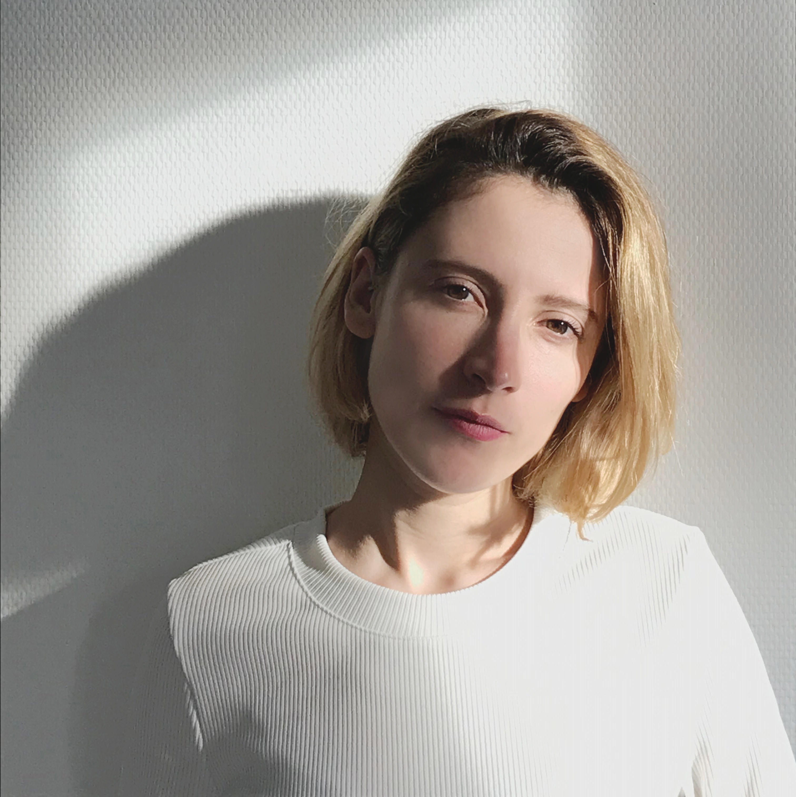

My name is Laura Kiritzé Topor. I’m a French Industrial Designer, I live and work in Paris.
After a first Master Degree in Industrial Design at École Boulle,
I specialized in Innovation, Design and Luxury.
I worked for 3 years at Kenzo - LVMH as an Environment and Merchandising Designer. As a project manager, I was in charge of the creative and technical development on several perfumes launches.
A construction company awarded me for my smart door project and I also won this two days european design challenge with my friends.
As a freelance designer, I'm always looking for new and exciting opportunities so don't hesitate to reach out and say hello. I don’t like coffee but I drink a lot of green tea.